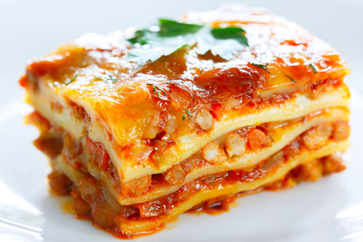

Lasagna

Délicieuses Lasagnes au Boeuf
Vous aussi réalisez ces délicieuses lasagnes au boeuf facilement lol
Ingrédients
- Lasagnes
- Boeuf haché
- Sauce tomate
- Crème
- Beurre
- farine
- Emmental Rapé
- Faites cuire le boeuf haché dans une pôele
- Faites fondre le beurre à feu doux avant d'ajouter la farine
- Mélangez le beurre fondu avec la farine et ajoutez la crème
- Fouettez le tout afin d'obtenir une texture homogène
- Ajoutez la sauce tomate au boeuf, puis laissez mijoter
- Dans un plat beurré, ajoutez une couche de béchamel, une couche de pâtes à lasagne et une couche de boeuf.
Répétez l'opération jusqu'à arriver en haut du plat
- Recouvrez d'emmental rapé
- Mettez au four 45 minutes à 180 degrés
- Servez bande de salopes